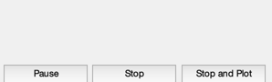
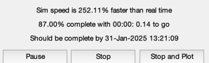
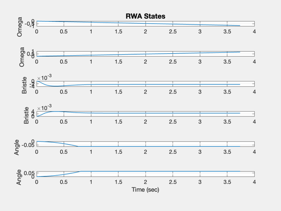
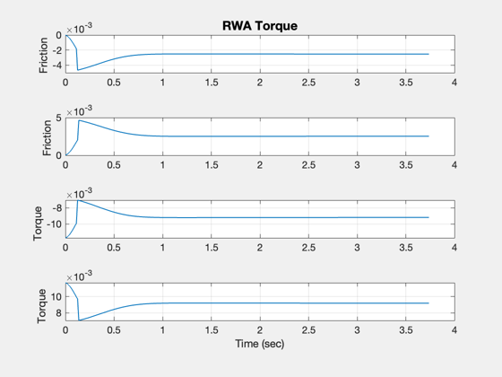
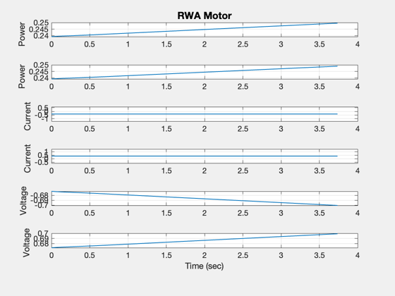
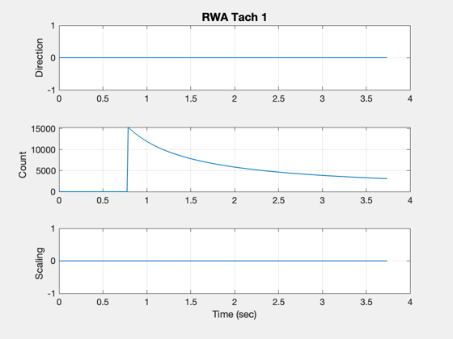
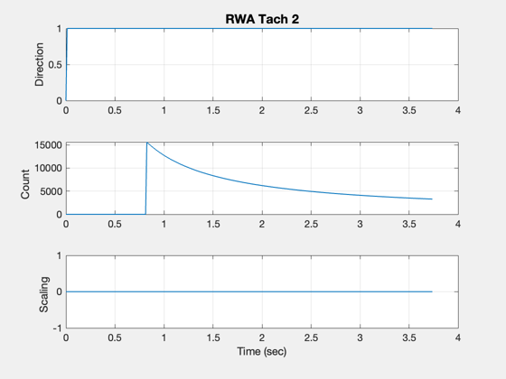

Test the smart reaction wheel model.
------------------------------------------------------------------------
See also Plot2D, TimeGUI, RK4, RWASmart
------------------------------------------------------------------------
Contents
Global for the TimeGUI
global simulationAction
simulationAction = ' ';
Simulation parameters
dT = 0.0125;
nSim = 300;
Input the friction model
d = RWASmart('get default datastructure');
d.friction(1).fStatic = 0.005;
d.friction(1).fCoulomb = 0.005/2;
d.friction(1).vStribeck = 0.1;
d.friction(1).sigma0 = 1;
d.friction(1).sigma1 = 1e-4;
d.friction(1).sigma2 = 4.0585e-05;
d.friction(1).maxC = 0.1/dT;
d.nWheels = 2;
d.friction(2) = d.friction(1);
Reinitialize
RWASmart( 'initialize', d );
Initialize the time display
[ ratioRealTime, tToGoMem ] = TimeGUI( nSim, 0, [], 0, dT, 'RWA Smart Simulation' );

Initial conditions
x = [0;0;0;0;0;0];
xPlot = zeros(22,nSim);
t = 0;
Commanded voltage
RWASmart( 'put data word', [-100;100] );
for k = 1:nSim
RWASmart( 'set tachometer states', struct( 'omega', x(1:2), 'angle', x(5:6)) );
tachWord = RWASmart( 'get tachometer word' );
[ ratioRealTime, tToGoMem ] = TimeGUI( nSim, k, tToGoMem, ratioRealTime, dT );
x = RK4( 'RWASmart', x, dT, [0;0] );
tPlot(k) = t;
xPlot(:,k) = [x;...
RWASmart( 'get friction torque' );...
RWASmart( 'get torque' );...
RWASmart( 'get power' );...
RWASmart( 'get motor current' );...
RWASmart( 'get motor voltage' );...
tachWord(1).direction;...
tachWord(1).count;...
tachWord(1).scaling;...
tachWord(2).direction;...
tachWord(2).count;...
tachWord(2).scaling];
t = t + dT;
switch simulationAction
case 'pause'
pause
simulationAction = ' ';
case 'stop'
return;
case 'plot'
break;
end
end
RWASmart( 'quit' );
yLbl = ['Omega ';...
'Omega ';...
'Bristle ';...
'Bristle ';...
'Angle ';...
'Angle ';...
'Friction ';...
'Friction ';...
'Torque ';...
'Torque ';...
'Power ';...
'Power ';...
'Current ';...
'Current ';...
'Voltage ';...
'Voltage ';
'Direction';...
'Count ';...
'Scaling '];
Plot2D( tPlot, xPlot( 1: 6,1:k), 'Time (sec)', yLbl( 1: 6,:), 'RWA States')
Plot2D( tPlot, xPlot( 7:10,1:k), 'Time (sec)', yLbl( 7:10,:), 'RWA Torque')
Plot2D( tPlot, xPlot(11:16,1:k), 'Time (sec)', yLbl(11:16,:), 'RWA Motor')
Plot2D( tPlot, xPlot(17:19,1:k), 'Time (sec)', yLbl(17:19,:), 'RWA Tach 1')
Plot2D( tPlot, xPlot(20:22,1:k), 'Time (sec)', yLbl(17:19,:), 'RWA Tach 2')
     